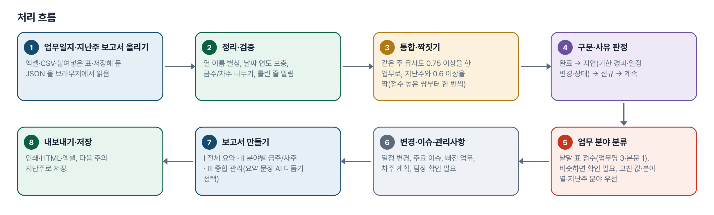
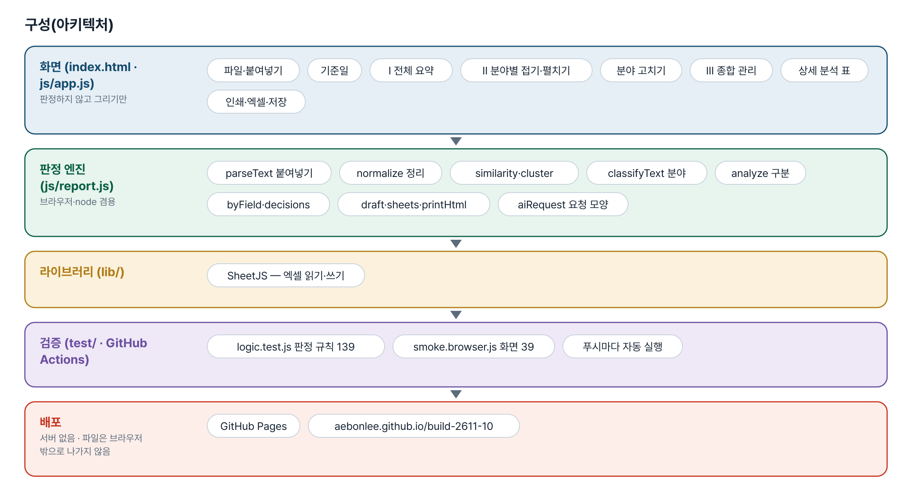
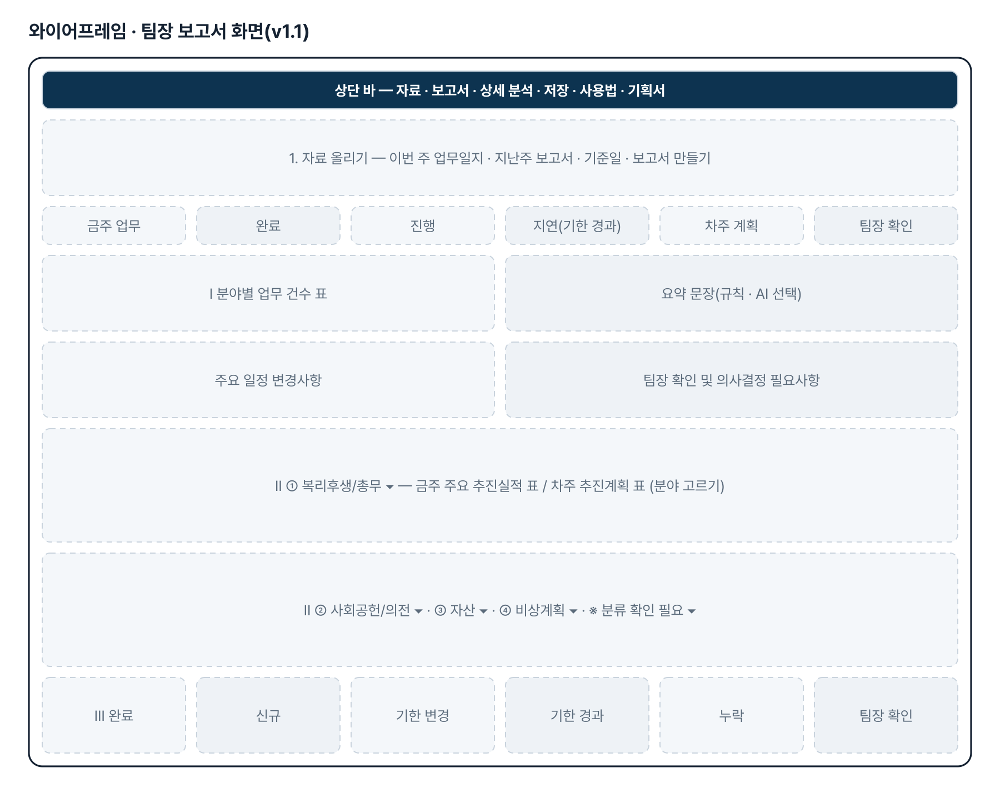
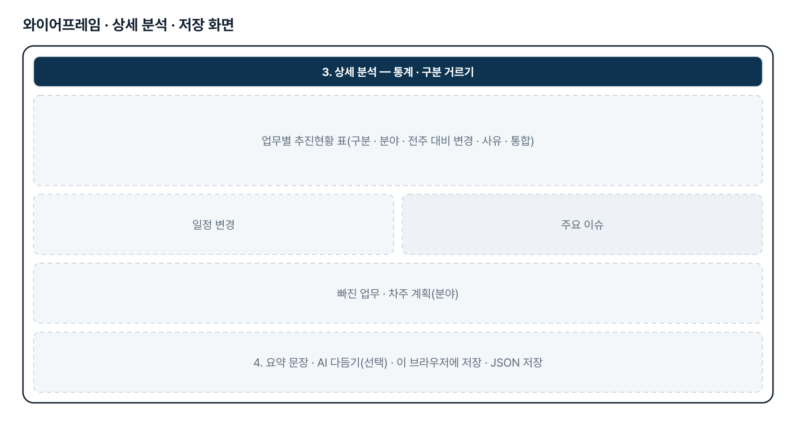
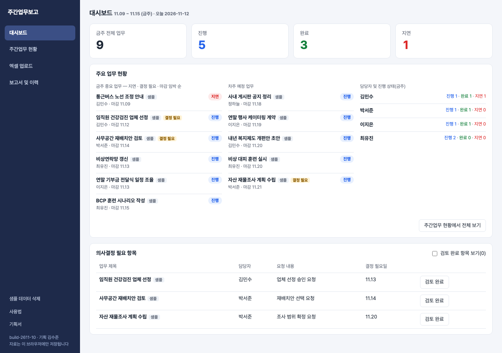

기획서 내려받기
파이프라인 · 아키텍처 · 와이어프레임 · 개발일지가 들어간 워드 문서입니다. 버전마다 따로 남깁니다.
| 버전 | 날짜 | 바뀐 점 | 파일 |
|---|---|---|---|
| v1.1 | 2026-11-03 | (17번으로 옮김) 보고서 최상위 분류를 업무 분야 4개로 개편 | 워드 내려받기 |
| v1.0 | 2026-11-02 | (17번으로 옮김) 첫 판 — 업무일지와 지난주 보고서 비교 | 워드 내려받기 |
| v2.1 | 2026-11-13 | 업무분류 추가(기획자 [수정요청]) — 복리후생/총무 · 사회공헌/의전 · 자산 · 비상계획 · 미분류 / 엑셀에 「업무분류」 열이 있으면 그 값을 우선 쓰고, 비어 있으면 제목 · 세부내용의 낱말로 자동 분류. 맞는 낱말이 없거나 두 분류에 똑같이 걸리면 미분류 / 엑셀 양식에 「업무분류」 열과 선택 목록(드롭다운) 추가 / STEP 03 미리보기에서 업무분류를 직접 고르고, STEP 04 등록 때 그 값을 저장 / 첫 화면 사진 3장(기획자 제공) | 워드 내려받기 |
| v2.0 | 2026-11-12 | 심플형으로 다시 만듦 — 메뉴 4개(대시보드 · 주간업무 현황 · 엑셀 업로드 · 보고서 및 이력) / 엑셀 4개 항목 원문 추출 · 미리보기 · 최종 등록, 중복 의심 확인 / 금주 · 차주 좌우 두 칸, 세부내용 펼치기, 의사결정 필요 항목 / v1.1(지난주 비교 · 분야별 보고서)은 17번으로 옮김 / 규칙 테스트 36 · 화면 테스트 47 | 워드 내려받기 |
요구사항과 구현
| 기획서 요구 | 구현 |
|---|---|
| 디자인 — 네이비 사이드바 · 카드형 · 작은 글씨 · 장식 없음 | 기획자 시제품의 색(네이비 #1e2a4a · 블루그레이 배경)과 배치를 따른 css/weekly.css. 외부 글꼴 CDN 없이 Pretendard → Noto Sans KR → 시스템 글꼴 순 |
| 왼쪽 메뉴 4개 | 대시보드 · 주간업무 현황 · 엑셀 업로드 · 보고서 및 이력. 사용법 · 기획서 · 샘플 삭제는 사이드바 아래 작은 링크 |
| 대시보드 — 현황 카드 4개 · 주요 업무 · 의사결정 | 금주 전체 · 진행 · 완료 · 지연 자동 집계, 금주 중요 6건(지연 → 결정 필요 → 마감순) · 차주 예정 · 담당자별 상태, 의사결정 표(검토 완료는 기본 숨김) |
| 주간업무 현황 — 금주 · 차주 좌우, 따로 스크롤 | 같은 너비 두 칸(.cols), 칸마다 overflow:auto. 상단 필터(담당자 · 분야 · 상태), 이전 주 · 다음 주 이동 |
| 세부내용 접힘 · 펼치기(업무마다 독립) | 업무 행을 누르면 그 업무만 펼침, 원문은 pre-wrap 으로 줄바꿈 유지. 펼친 자리에서 상태 · 분야 변경, 수정 · 삭제(한 번 더 확인) |
| 업무 등록 · 수정 · 삭제 | 현황 화면 위쪽 입력 카드. 같은 주 · 담당자 · 주요내용이 겹치면 한 번 더 확인 |
| 엑셀 업로드 — 4개 항목 추출 | SheetJS(동봉)로 XLSX · XLS 여러 파일 · 여러 시트. 머리글 이름으로 열 식별(순서 무관), 원문 그대로(공백 · 줄바꿈 유지), 빈 셀은 빈 값 |
| STEP 01~04 · 등록 전 미반영 | 올리기 → 추출 → 미리보기(담당자 · 날짜 · 내용 수정, 등록 안 함 체크) → 최종 등록. 등록 단추 전에는 저장하지 않음 |
| 담당자는 파일명 또는 사용자 선택 | 파일 이름의 한글 2~4자 낱말에서 후보(흔한 낱말 제외), 없으면 비워 두고 입력해야 등록 가능 |
| 중복 의심 확인 | 같은 주 + 담당자 + 주요내용(띄어쓰기 무시)이 같으면 표시, 기본 「등록 안 함」 — 풀면 등록 |
| 금주 · 차주 자동 배치, 엑셀에 없는 항목은 미분류 | 날짜가 속한 주(월요일 시작)로 배치, 분야 · 상태 · 의사결정은 비워 두고 현황 화면에서 지정 |
| 보고서 및 이력 | 주차별 보고서(분야별 묶음, 인쇄 · 엑셀), 담당자별 업무 이력, 상태 변경 · 수정 · 삭제 이력, 엑셀 업로드 이력, 검색 |
| 지연 표시 · 새로고침 후 유지 · 샘플 구분 | 지연은 저장하지 않고 마감일로 계산. localStorage 저장, 백업 JSON. 샘플은 is_sample 로 표시하고 한 번에 삭제 |
| 추후 Supabase 연동 가능한 데이터 구조 | tasks · logs 두 표 모양(납작한 칸)으로 저장 — 기획자 시제품의 칸 이름과 맞춤 |
그림으로 보기





개발일지
2026-11-13 · v2.1 업무분류
- 자동 분류는 낱말 규칙(classify)이다 — 외부 AI 를 부르지 않는다(자료가 브라우저 밖으로 나가지 않게). 어떤 낱말로 분류했는지 미리보기에 보여 준다
- 양식의 선택 목록은 SheetJS 가 쓰지 못해, 만든 파일의 시트 XML 에 dataValidations 를 끼워 넣는다
- 규칙 테스트 47 · 화면 53 통과
2026-11-13 · 마무리 — 로그인 · 게시판 · 첫 화면(판 2026-11-13.1)
- 과정 마무리 묶음을 붙임(마산 2차수 과제와 같은 키트) — 로그인 전 첫 화면(사진 3장 · 기능 · 사용 순서 · 기획서), 회원가입 → 사용 신청 → 관리자 승인, 게시판 · 새 글 알림, 내 정보, 관리(구성원 승인 · 첫 화면 모양)
- Supabase 표 · 함수 · 정책은 전부 build261110_ 로 시작(auth.sql · board.sql · site.sql). 과정용 프로젝트에 적용했고, supabase/README.md 순서대로 본인 프로젝트로 옮길 수 있음
- 도구의 계산 · 판정 · 저장 방식은 그대로(업무 자료는 지금처럼 브라우저 안에서만 처리). 기획서 · 사용법 쪽은 로그인 없이 읽음
- 내 PC(파일로 열기 · localhost)에서는 로그인을 건너뜀 — 주소 끝에 ?auth=1 을 붙이면 로그인 화면을 볼 수 있음
2026-11-12 · v2.0 심플형
- 패들릿 10번 섹션의 [수정요청](심플형 프롬프트 + 기획자 시제품 HTML) 확인
- 애본님 지시대로 기존 v1.1 을 build-2611-17 로 옮겨 배포(내용 그대로, 표시 번호 · 주소만 변경)
- 기획자 시제품의 색 · 배치 · 칸 이름(tasks · logs)을 따르되 엔진을 따로 떼어 테스트로 고정하고 외부 CDN(글꼴 · 엑셀 라이브러리)을 없앰
- 시제품과 다르게 한 것: 상태 「미지정」을 없애고 진행으로 셈(요청: 상태는 3가지), 중복 의심은 기본 「등록 안 함」, 읽지 못한 날짜는 원문 표시
- 규칙 36 · 화면 47 통과, 엔진을 일부러 깨뜨려 실패하는지 확인